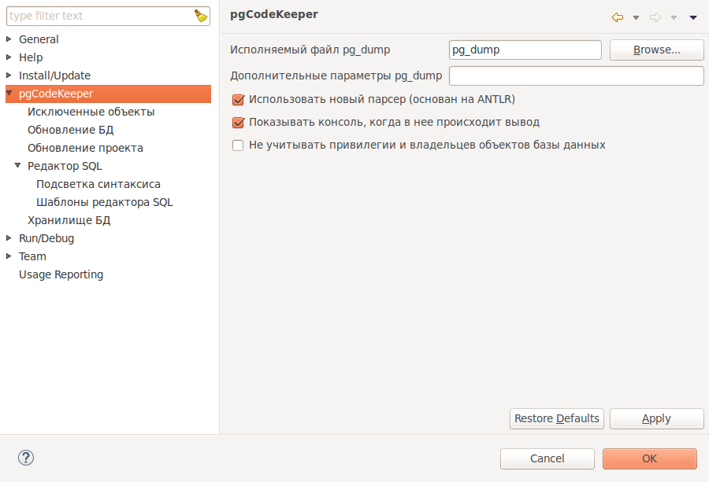

Это основные настройки для работы программы.

На странице настроек pgCodeKeeper -> Редактор SQL -> Шаблоны редактора SQL Вы можете настроить путь до испольняемого файла pg_dump, используемого для чтения БД с сервера, здесь можно использовать любой инструмент, который отдаст скрипт в виде файла для разбора.
Дополнительные параметры pg_dump позволяют задавать дополнительные опции, которые будут применены при вызове pg_dump.
Показывать консоль используется для отображения изменений в консоль
Не учитывать привилегии позволяет пропускать сравнение привилегий объектов.